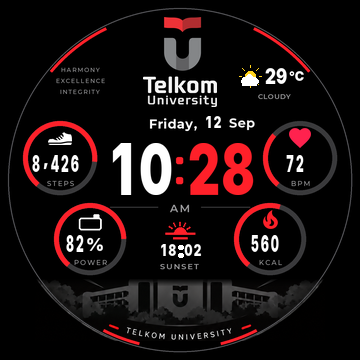

TELKOM / UNIVERSITY
AMAZFIT T-REX PRO
CAMPUS IDENTITY. EVERY DAY.
Kampus.
Dalam merah.
Silhouette Tel-U, semboyan Harmony, Excellence, Integrity, dan satu layar yang bercerita: cuaca, matahari terbit atau terbenam, langkah, jantung, kalori, dan baterai.
360 x 360LAYAR AMOLED
UIHH v2LEGACY BIN
118ASET TERTANAM
Edisi v5 TELKOM UNIVERSITY. Layout telah diperiksa pada seluruh varian sprite. Pergantian matahari terbit/terbenam dan tampilan v5 masih menunggu uji di jam. Preview di samping dirender langsung dari isi file .bin.

Simulasi dari isi .bin yang sudah diverifikasi. Data contoh, bukan data jam langsung.